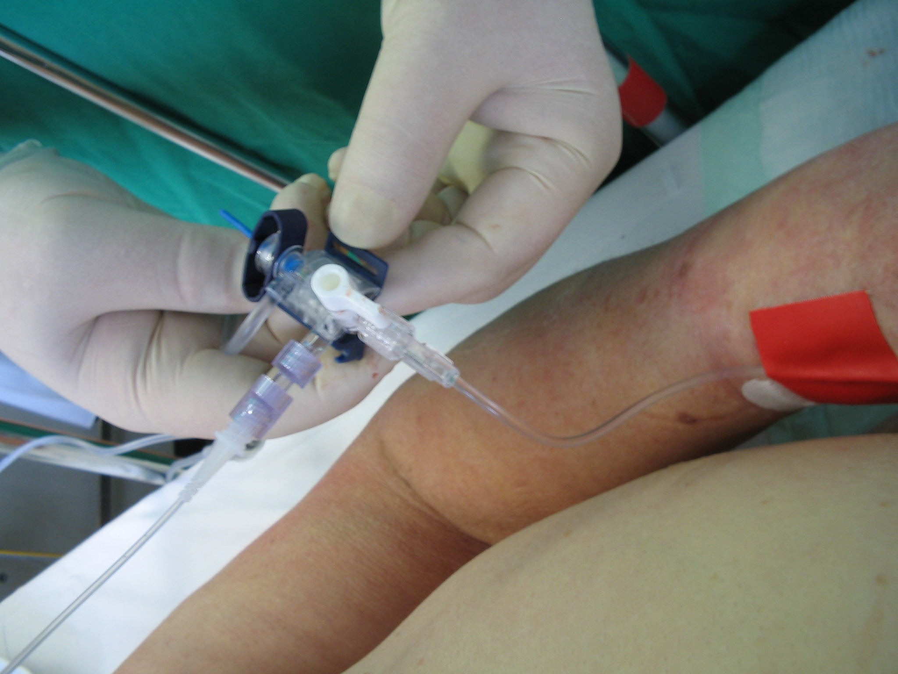
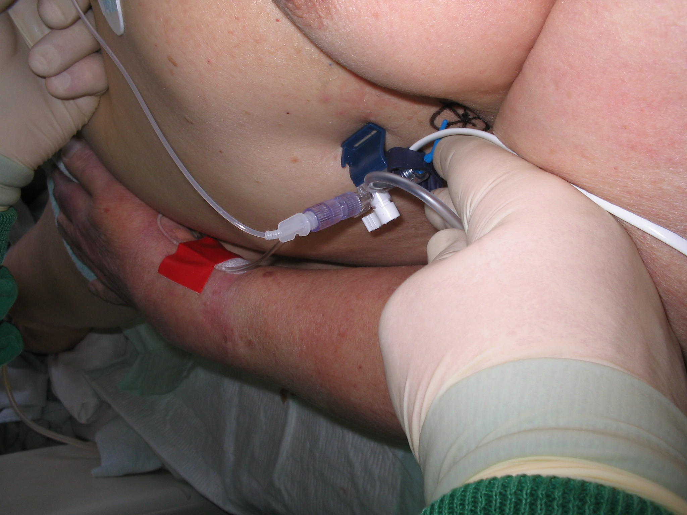

Anleitung zum Aufbau der ZVD Messung
unter Verwendung des arteriellen Druckdomes
Der Patient ist für die ZVD-Messung in flache Rückenlage zu bringen. In Höhe des 4ten ICR wird mittels Thoraxschieblehre (Wasserwaage in Mittelstellung) der Punkt der Herzhöhe festgelegt und mit wasserfestem Edding am Thorax markiert.Für den Messvorgang ist der Druckdom an dieser Markierung anzuhalten.Vor Beginn der Messung ist der Nullabgleich des Druckdomes auf Herzniveau durchzuführen.Dazu wird der Teil der Druckleitung am 3-Wege-Hahn des ZVK diskonnektiert.
Anhand der folgenden Bilder mit der dazugehörigen Beschreibung sollte man in der Lage sein, die notwendigen Teile zur Messung des ZVD über den arteriellen Druckdom zusammenzubauen und zu verwenden
Im Bild zu sehen ist die druckstabile Perfusorleitung am 3-Wege-Hahn des ZVK zur Verbindung mit dem 3-Wege Hahn des arteriellen Systems.

Bei genauer Betrachtung fällt auf, dass hier am 3-Wege Hahn des arteriellen Systemes ein Zwischenstück eingesetzt werden muss.Dieses ist im Wagen bei den arteriellen Sets zu finden
Für einen korrekten Wert unerlässlich ist die
Lage des Druckdomes auf Herzniveau, wie bei der Messung
über die Wassersäulenmethode.

In den Bilder zu erkennen ist auch die korrekte Stellung der 3-Wege-Hähne.
Am ZVK zum Infusionssystem geschlossen, an der Arterie zur arteriellen Kanüle hin geschlossen.